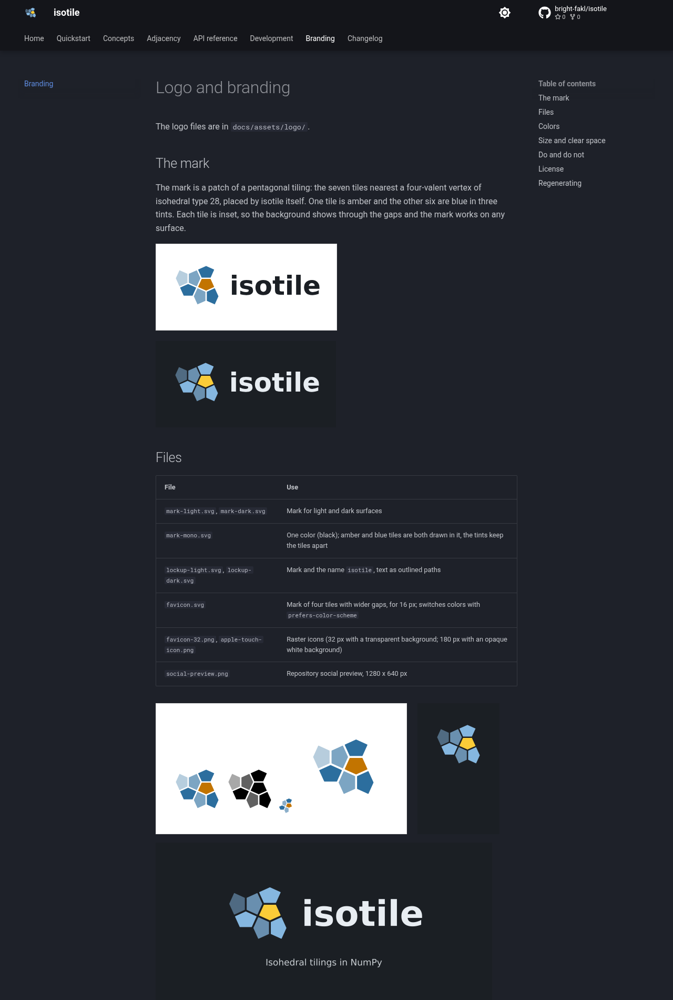
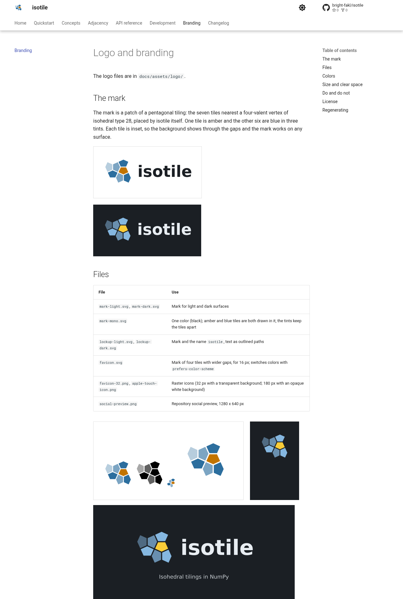
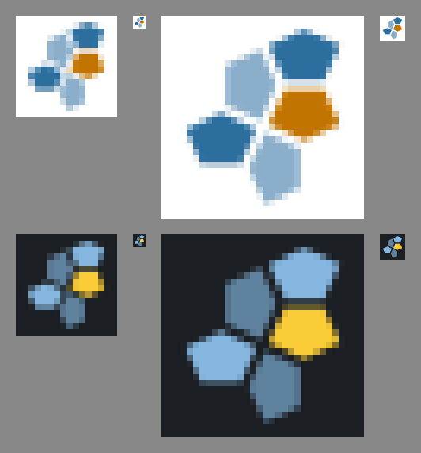
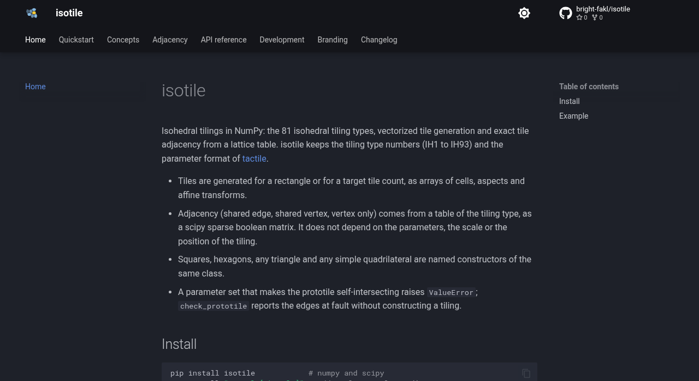
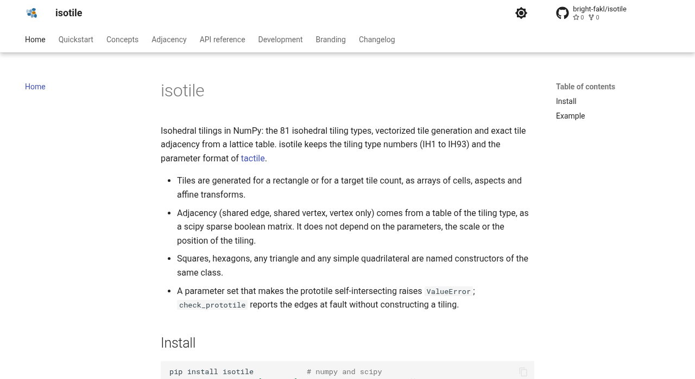
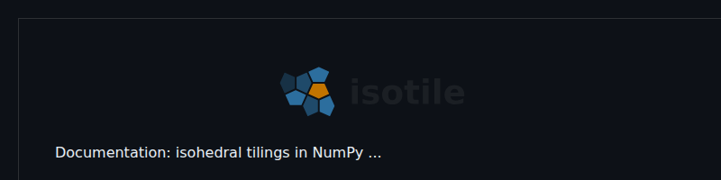
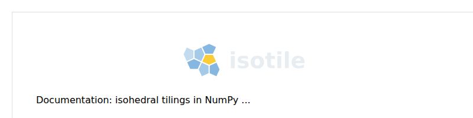
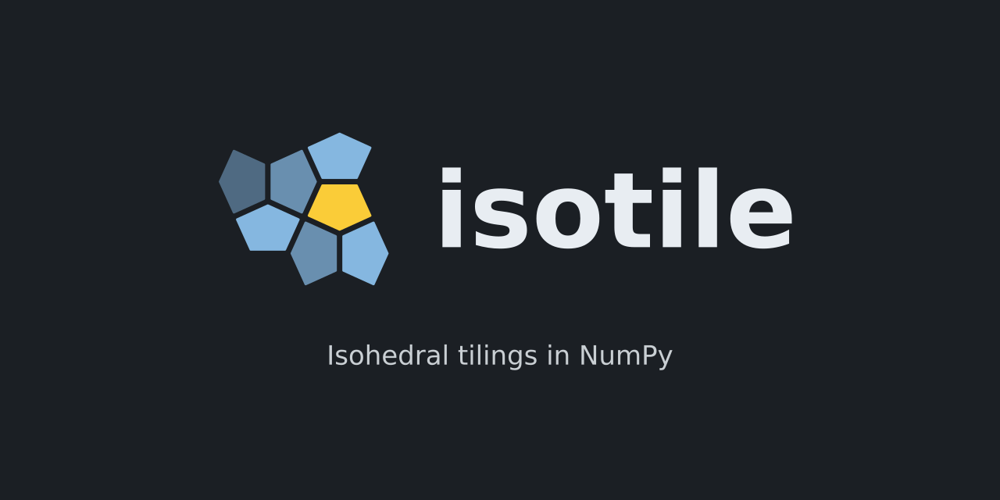

Final logo asset set for isotile (the pentagon patch a_patch with the pinwheel favicon a_patch_fav) generated by scripts/make_logo_assets.py, wired into the docs (header logo per color scheme, favicon, Branding page) and the README header on the docs-skeleton branch of PR 2. One logo shows in the header in each scheme; CI is green.
scripts/make_logo_assets.py (deterministic, no network) writes docs/assets/logo/: mark-light.svg, mark-dark.svg, mark-mono.svg, lockup-light.svg, lockup-dark.svg, favicon.svg, favicon-32.png, apple-touch-icon.png (180 px, white background) and social-preview.png. --check regenerates the SVG files in memory and fails if they differ from the stored files; the PNG files are not compared.a_patch: seven tiles of type 28 around a four-valent vertex, one amber, six blue in three tints. favicon.svg and favicon-32.png use a_patch_fav (four tiles, gap 4.4). favicon.svg switches colors with prefers-color-scheme.docs/branding.md.theme.logo, theme.favicon, custom_dir: docs/overrides with partials/logo.html (one <img> per scheme, classes it-logo--light and it-logo--dark), docs/stylesheets/logo.css ([data-md-color-scheme="default"] .md-logo .it-logo--dark and the slate counterpart set display: none; the selector includes .md-logo because Material sets display: block on .md-logo img), and the Branding page in the nav (usage, colors with contrast ratios, clear space, minimum sizes, do and do not, font and license, regeneration).width and height, so they have an intrinsic size in the header and on the Branding page.<picture> element with absolute raw.githubusercontent.com/bright-fakl/isotile/main/docs/assets/logo/ URLs for lockup-light.svg and lockup-dark.svg. They resolve after the merge to main; the render above uses relative paths.| Check | Result |
|---|---|
Logos visible in the header (computed display and natural size of the .md-header .md-logo images) | light scheme: it-logo--light only; dark scheme: it-logo--dark only; both 96 x 96 |
| Branding page | lockups, mark, one-color mark, 32 px favicon, touch icon and social preview render; no blank rectangles |
mkdocs build --strict | no warnings |
| pytest | 2,843 passed, 78 skipped (includes tests/test_docs_examples.py) |
ruff, ruff format, mypy --strict, uv lock --check, pre-commit hooks | clean |
make_logo_assets.py --check | up to date |
| CI at b55a11d | all jobs green (lint, typecheck, tests on Linux 3.10 to 3.13, macOS, Windows, tactile-equivalence, data-check, minimum-versions, wheel-smoke-test, check-docs, deploy-docs build); the deploy job is skipped on the PR by design |
Contrast of the colors on the docs surfaces (computed by the script): light blue 5.48 and light amber 3.63 on white; dark blue 7.61 (9.85) and dark amber 10.63 (13.76) on #1e2029 (#000000).
main, where the files do not exist before the merge.favicon.svg follows the operating system scheme, not the docs toggle, so on a dark system with the light docs scheme the tab icon is the dark variant.
Branding page, dark scheme.

Branding page, light scheme, with the lockups, the file table and the asset previews.

Favicon (a_patch_fav) at 16 and 32 px, enlarged 8x with nearest-neighbor next to the actual size, on white (top) and on #1b1f24 (bottom).

Home page, dark scheme; the header shows the dark mark.

Home page, light scheme; the header shows the light mark.

README header with a dark page (GitHub dark surface #0d1117).

README header (<picture> element) with a light page.

Social preview, 1280 x 640 px.